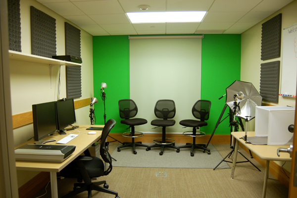

Darien Library's Digital Media Lab
Creation Spaces
Darien Library
Darien, Connecticut
Darien Library
- 45 minutes north of NYC
- ~20,000 residents
- 1 Branch
- Association library
- New construction (2009)
Darien's Digital Media Lab

(DML)
Darien's Digital Media Lab
- Commodity vs. specialty computing
- Heavily focused on analog to digital conversion
- Provides professional-level tools to users
- May be reserved for two-hour time blocks
- Staff instruction is available
DML vs Maker Space
//TODO: Side-by-side pics of DML & TEA RoomDecision 1: Maker space or digital media lab?
Maker Spaces
Pros
- Strong interest
- Existing expertise
- Versatile
- Fun
- "Active"
- Less Expensive
- High profile/visibility
Maker Spaces
Cons
- Alignment with library's mission is not immediately apparent
- Can be messy
- Achieving sustained usage can be a challenge
- Materials are an ongoing expense
- Safety and liability are considerations
Digital Media Labs
Pros
- Can leverage existing technology expertise
- Can piggyback on existing infrastructure & service models
- More apparently in-line with the library's mission
- Broader demand among library users
- Practical application for local businesses
Digital Media Labs
Cons
- More expensive
- Requires high-level technical expertise
- More intensive training for staff
- More ongoing one-on-one work with users
- Equipment failure and replacement create ongoing costs
Our Choice: DML
- Because of the pros previously listed
- The space we had available was more appropriate for DML
- Survey of users' needs revealed that they would use DML more than a maker space
- My personal feeling that DML would have a deeper community impact
Planning and Preparation
Planning the Space
- Identify where the DML would be located
- Space considerations
- Power
- Data & wiring
- Ambient Noise
- Lighting
- Ability to be monitored by staff
- Balance between privacy and visibility
Planning the Budget
- Make a list of costs associated with barebones preparation
- Make a list of all the desired capabilities
- Spec out solutions to provide those capabilities
- Prioritize
- Scale back as necessary
Making Your Case
- Articulate the value proposition
- Work with community leaders ahead of time
- Build interested inside and outside the library
- Proof-of-concept
- Tie-ins (Institutional repositories, DPLA, etc)
- Link it to the core mission of the library
- Optional: Develop a business plan for generating revenue
Wizard101

Online role-playing
Wizard101

- Character building & development
- Quests & team play
- Limited PvP
- Mild violence and combat
- Ages 8 to 16
Minecraft

The blockbuster, indie "sandbox" game
Minecraft

- Players mine for and build with resources
- Wildly popular with kids ages 8-14
- Single and multiplayer
- Very mild violence centered around survival
- Some servers allow PvP
- Ages 6+
Minecraft

- Darien Library hosts the Fairfield County Minecraft Server
- All players must have a valid library card from a participating library
- Staff monitored and moderated
- Focused on community
- Ages 6-17
Roblox

Vaguely similar to Minecraft but with more focus on "self", avatar-development, and combat
Roblox

- Lego-like landscape
- Integrates Lua programming language
- Players learn about computer programming, stocks, ratios, advertising, and marketing
- "Builders Club" is premium gameplay for a monthly charge
- In-game purchases
- Ages 8 to 18
Garry's Mod (Gmod)

"Sandbox" physics game available through Steam
Garry's Mod (Gmod)

- No game objective
- Players can use the game's set of tools for any purpose
- Environment is manipulated using a "Physics Gun" and a "Tool Gun"
- Introduced "ragdoll posing"
- Ages 10 to 18
Clash of Clans

Mobile, "freemium" strategy game, similar to Age of Empires
Clash of Clans

- Players build NPC communities
- Combat with other players
- Join "clans" for protection and conquest
- "Pay to advance" game
- Ages 10 to Adult
League of Legends

Multiplayer online battle arena
League of Legends

- Players are "matched" with other players of similar ranking
- Player "Champions" advance and level-up
- Moderation is conducted through a democratic system known as The Tribunal
- High-stakes tournaments
- Ages 12+
World of Warcraft

The world's most-subscribed MMORPG
World of Warcraft

- Subscription-based gameplay
- D&D-like role-playing
- Parental controls available
- Black market of virtual goods in the real world
- Ages 12+
Eve Online

Real-time, space-based strategy game
Eve Online

- Highly complex gameplay
- Players maintain characters, ships, and inventory
- Gameplay can focus on many different areas
- Black market of virtual goods in the real world
- Ages 14+
Call of Duty

Hyper-realistic first-person combat
Call of Duty

- Highly immersive combat environment
- Real-world weapons
- Controversial history
- Extremely violent
- Ages 15+